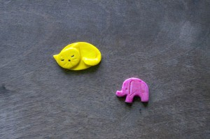
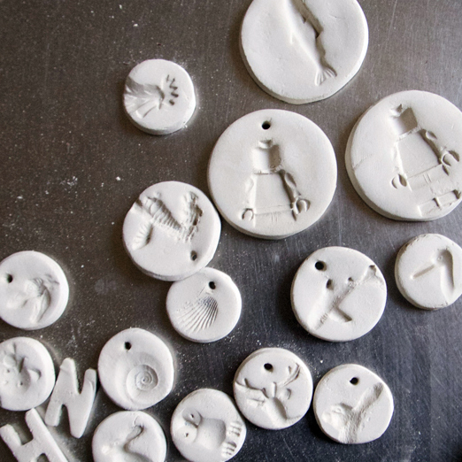

Facebook
Pinterest
Instagram
⌕ Buscar
ES
EN
DE
☰ Menú
Inicio
La casa
Accesorios
Decorar
Instrucciones
Blog
Fiestas
Navidad
Pascua
Halloween
Carnaval y disfraces
San Valentín
Cumpleaños
Día de la Madre/Padre
Vuelta al cole
Estaciones
Primavera
Verano
Otoño
Invierno
Qué hacer
Juguetes
Juegos
Imprimibles
Recetas y comida
Decoración
Pintar
Experimentos
Al aire libre
Aprender
Animales
Regalos y joyas
Construir y trucos
Otras manualidades
Material
Papel
Cartón
Rollos de papel
Reciclaje
Piedras
Hojas y naturaleza
Tela, coser y tejer
Inicio
›
Blog
Blog
Fiestas
Navidad
Pascua
Halloween
Carnaval y disfraces
San Valentín
Cumpleaños
Día de la Madre/Padre
Vuelta al cole
Estaciones
Primavera
Verano
Otoño
Invierno
Qué hacer
Juguetes
Juegos
Imprimibles
Recetas y comida
Decoración
Pintar
Experimentos
Al aire libre
Aprender
Animales
Regalos y joyas
Construir y trucos
Otras manualidades
Material
Papel
Cartón
Rollos de papel
Reciclaje
Piedras
Hojas y naturaleza
Tela, coser y tejer
Verano
Refresco
Detalle 02
Material
Amigas
Material
Detalle 01
Actividad
bssssssssssss
Material
Búhos
Actividad
Saltar
Cartón
En obra
Material
Caballeros
Pared
Actividad
Rascar
App
Pronto 02
Exterior
Relieve
Juguete
Calle
Material
Correo
Juguete
Peinado
Ocasión
Peces
Verano
Globos
Actividad
Truco
kidsmobilebox
Pronto
Actividad
Arcilla blanca

Actividad
Colgantes

Imprimibles
Separador de libros 02
Imprimibles
Separador de libros
← Más recientes
Página 19 / 40
Más antiguas →